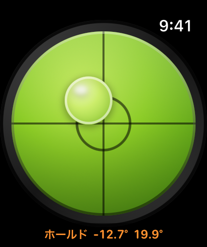

水平器 ウォッチスペシャル
Apple Watchで水平を確認できます。測りたい面にApple Watchを当てると、気泡の位置と角度で傾きを表示し、水平になると振動でお知らせします。画面をタップして測定値を固定すれば、見えにくい場所の数値も後から確認できます。
watchOS 10以降が必要です。
ダウンロード


サポート
ご質問や不具合のご報告は、メールでご連絡ください。
お問い合わせの前に
不具合がある場合は、まず以下をご確認ください。
- 「モーションセンサーがありません」と表示される場合 本アプリはモーションセンサーを使用します。センサーのないシミュレータではこの表示になります。実機のApple Watchで表示される場合は、Watchを再起動してからアプリを開き直してください。
- 気泡が動かない場合 画面にホールドと表示されていないかご確認ください。出ている間は測定値が固定されています。画面を1回タップすると解除されます。
- 水平になっても振動しない場合 Watchの設定 → サウンドと触覚 で、触覚がオンになっているか、強さが最小になっていないかをご確認ください。
- 数値が安定しない場合 手に持ったまま測らず、測定したい面にApple Watchを平らに当ててください。手のわずかな動きでも測定値は変わります。
よくある質問
- iPhoneがなくても使えますか？
はい。Apple Watchだけで使えます。iPhoneは必要ありません。 - 精度はどのくらいですか？
Apple Watchはモーションセンサーで傾きを測定します。精密な水平器の代わりではなく、日常的な簡易チェック用としてお使いください。 - どの範囲を「水平」と判定しますか？
水平からの傾きがおよそ2.9°以内のときです。この範囲に入ると中央のリングが白くなり、振動でお知らせします。 - 手首を下ろしても使えますか？
はい。常時表示（Always-On）でも表示は読み取れます。少し暗くなり、更新頻度を下げて電力を抑えます。 - なぜ1回ではなく2回振動するのですか？
測定値の固定・解除時の1回の振動と区別するためです。服の袖越しでも分かる強さにしています。 - インターネット接続は必要ですか？
いいえ。本アプリはネットワークに一切接続しません。 - データは収集されますか？
いいえ。センサーの測定値は気泡の描画にのみ使用され、Apple Watchの外に出ることはありません。
使い方


水平器の読み方
気泡は面の高い側へ動きます。高い側を下げるか、反対側を上げて、気泡が中央のリングに収まるように調整してください。
ダイヤルの下にある2つの数値は、各軸の傾きを度数で示したものです。1つ目が左右、2つ目が前後の傾きです。どちらも0に近ければ、その面は水平です。
水平になったときの振動
水平になると、Apple Watchが続けて2回振動します。画面を見られない姿勢でも、水平になったことが分かります。
測定値を固定する
画面のどこかをタップすると測定値が固定されます。数値の横に ホールド が表示され、数値はオレンジ色に変わります。もう一度タップすると解除され、測定が再開します。
測定中に画面が見えないときに使えます。棚の裏や家具の後ろなどにApple Watchを当て、画面をタップして測定値を固定してください。腕を戻してから数値を確認できます。
初めてアプリを開くと、数秒間タップでホールドという案内が表示されます。一度測定値を固定すると、この案内は表示されなくなります。
画面が下を向いているとき
画面を下に向けると、時計は下向きと表示されます。ダイヤルの色が薄くなり、気泡は縁に寄ったまま止まります。
画面が下を向いている間は、水平の判定や測定値の固定はできません。この状態でタップすると、短い振動でエラーをお知らせします。
手首を下ろしたとき
手首を下ろすと常時表示（Always-On）に切り替わります。画面を少し暗くし、更新頻度を下げて消費電力を抑えます。気泡と数値は引き続き確認できます。
法的情報
プライバシーポリシー
最終更新日: 2026年8月
収集しない情報
水平器 ウォッチスペシャルは、いかなるデータも収集しません。個人情報の収集、保存、使用、共有、販売、転送は一切行いません。
モーションセンサー
本アプリは、傾きを算出するために Apple Watch のモーションセンサーの値を読み取り、その値を画面上の気泡の表示にのみ使用します。値は Apple Watch 内にとどまり、保存も共有も送信も行いません。
ネットワーク接続なし
本アプリはネットワークに接続せず、アカウント登録、解析、広告、第三者製のコードも一切ありません。
お子様のプライバシー
データを一切収集しないため、児童オンラインプライバシー保護法（COPPA）をはじめとする関連規制に準拠しています。
本ポリシーの変更
本プライバシーポリシーは随時更新される場合があります。変更は本ページに掲載された時点で有効となります。
お問い合わせ
本プライバシーポリシーに関するご質問は support [at] hoshinosoftware [dot] com までご連絡ください。